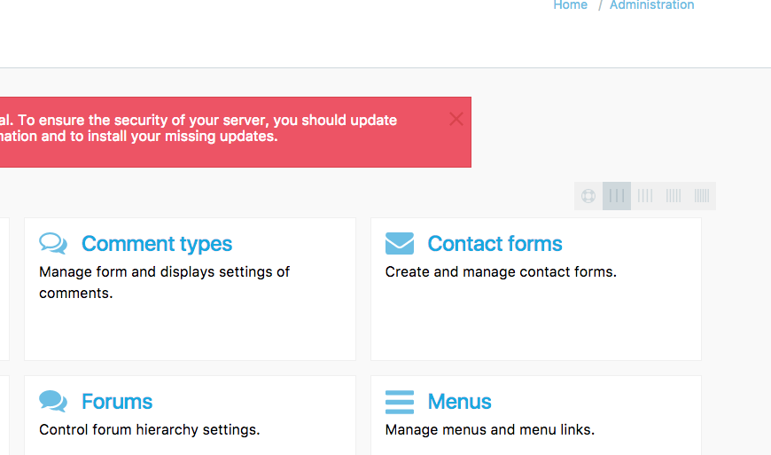

Designer for the User
Eleven theme is designer for the end user. its the focus is to make the admin experience beautyfull
Begone are the gray tables, the lack of visual identity and art direction made by committee.
Designed for Drupal 8
Drupal 8 was a huge step forward - but one thing was ignored (with good reason)
The look and feel of the admin theme.
Eleven themes mission is to change that, and push the boundries for how Drupal looks
and feels for those that use it every day.
Build by industry veterans
Eleven theme is the logical next step for Drupal years of rebuilding Drupals theming
system, Eleven theme builds on top of Drupal 8 core theme classy,
to bring a smoother, prettier & modern admin experience.
Icons
An admin theme dont have to be dull + the rest of the world use icons
Moderen UI
All the table listings have been removed for a modern card approach
Colors
Theres more than one tone of Drupal blue in the world
Pretty
We believe that drupal should be as pretty on the outside as the inside
No 3rd part modules
Eleven theme is build straight on Drupal8 core - no need to install 3rd part modules
Basetheme
Easy to change and customize
Free and open Source
Do with Eleven as you want - turn it up to 12 ... ,)
Supported
Eleven theme is supported by Theme machine (geek Royale)
Modern browsers
Were looking forward not back
No drop buttons
Less clicking more awesome
twig, html, css & js
11t is developer as close to drupal core as possible - so no need for preprocessors or anything else